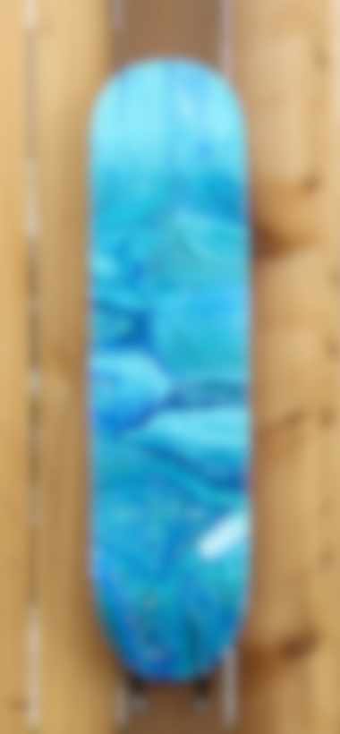

<div class="video-container" id="mob-vid">
  <!-- Desktop -->
  <ng-container *ngIf="(showMobileLayout$ | async) == false; else mobile">
    <div class="video-player opacity-changer"></div>
    <div class="opacity-changer" id="top"></div>
    <video
      playsinline
      autoplay
      loop
      [muted]="true"
      muted
      class="video-player-2"
    >
      <source src="{{ videoUrl }}" type="video/mp4" />
    </video>

    <div class="landing-title-container">
      <span class="heading glow">Bluey Art Shop</span>
      <span class="descr">POUR-PAINTED ACRYLIC ART PIECES</span>
      <span class="descr">HANDCRAFTED IN LOUISVILLE, KY</span>
    </div>
  </ng-container>

  <!-- Mobile -->
  <ng-template #mobile>
    <div class="mobile-landing-container">
      <div
        style="
          display: flex;
          justify-content: center;
          align-items: center;
          overflow: hidden;
        "
      >
        
        <div class="mobile-title">
          <span id="bluey" class="heading glow" style="font-size: 74px"
            >Bluey</span
          >
          <span
            id="artshop"
            class="heading glow"
            style="font-size: 74px; margin-bottom: 25px"
            >Art Shop</span
          >
          <span id="pour" class="descr">POUR-PAINTED ACRYLIC ART PIECES</span>
          <span class="descr">HANDCRAFTED IN LOUISVILLE, KY</span>
          <button
            mdbBtn
            color="success"
            class="waves-light shop-bluey-but"
            mdbWavesEffect
            routerLink="/shop"
            routerLinkActive="active"
          >
            VIEW PRODUCTS
          </button>
        </div>
      </div>
    </div>
  </ng-template>
</div>
